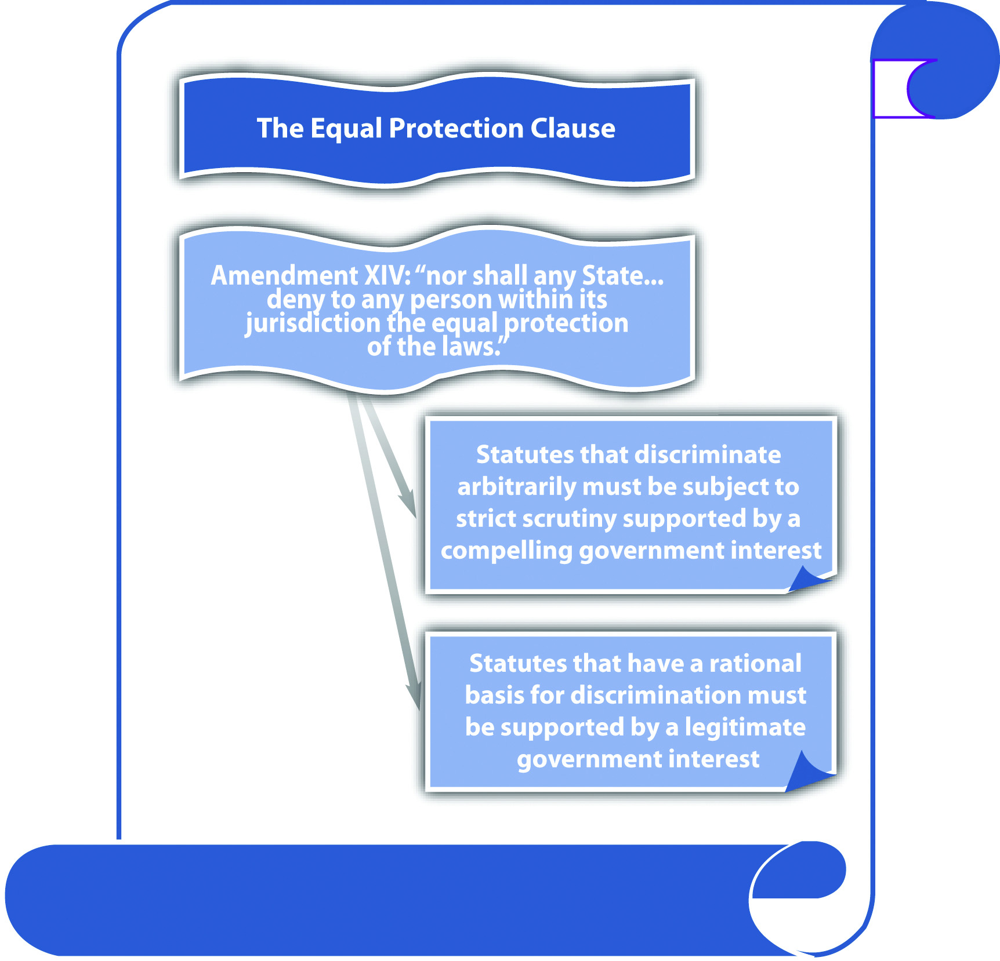
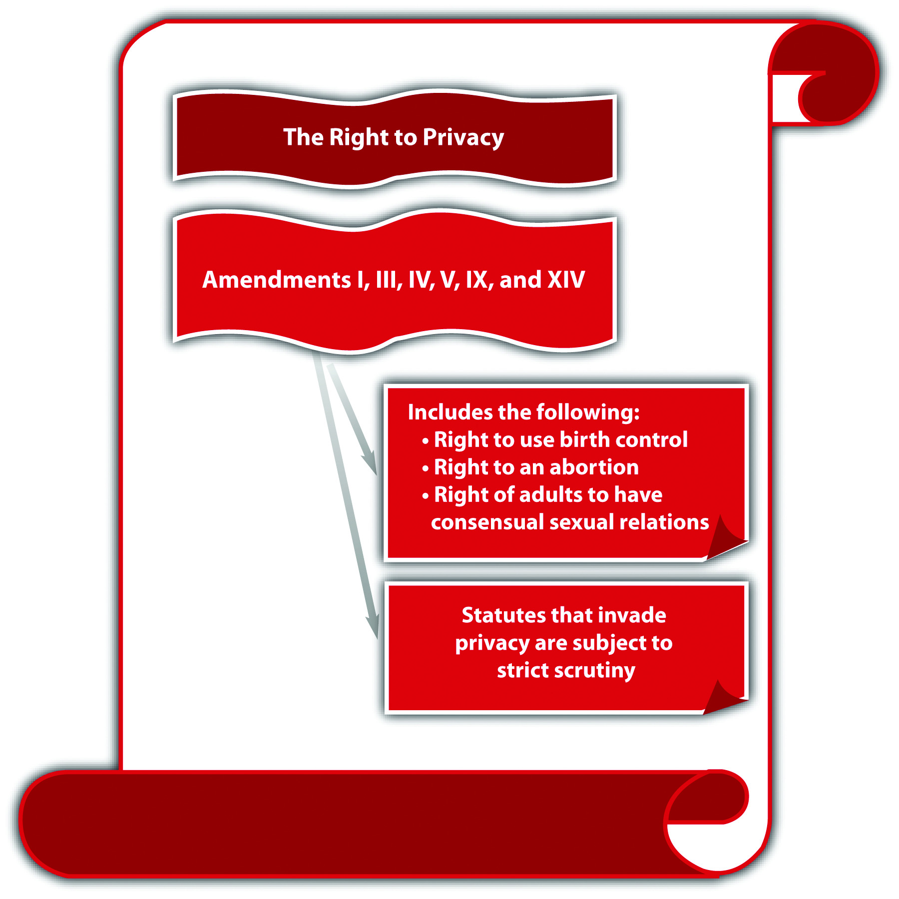
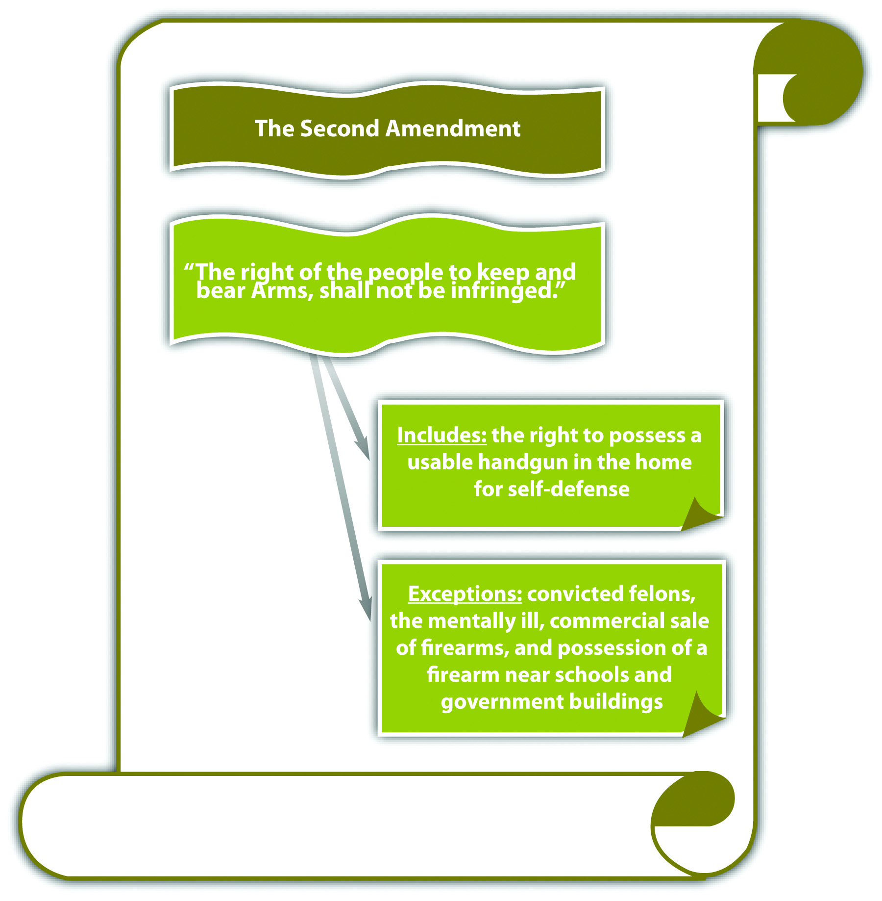
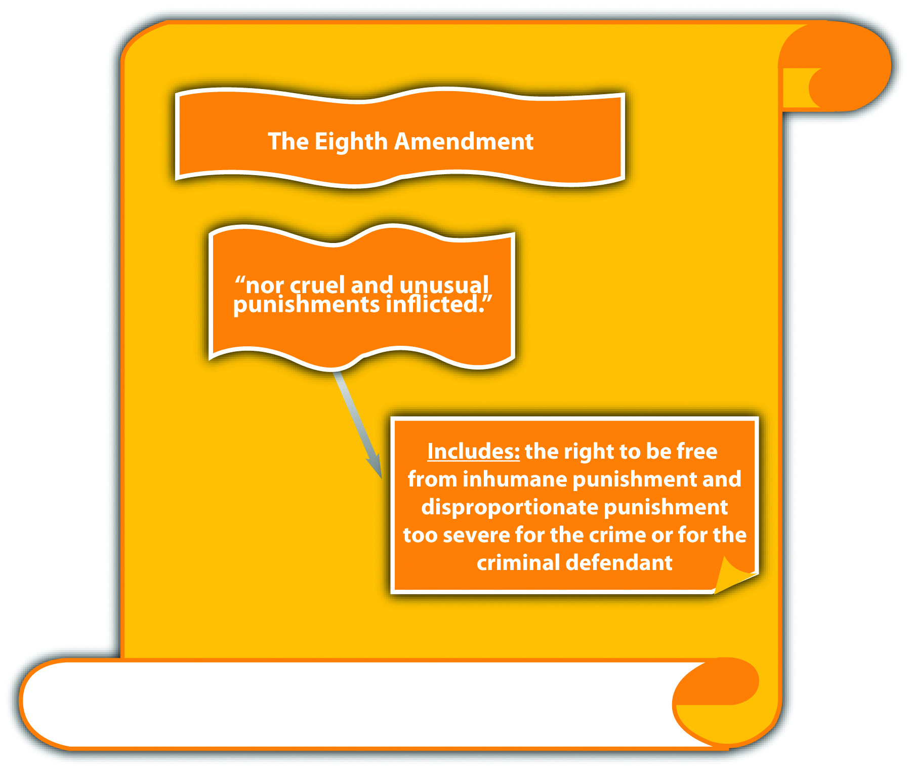
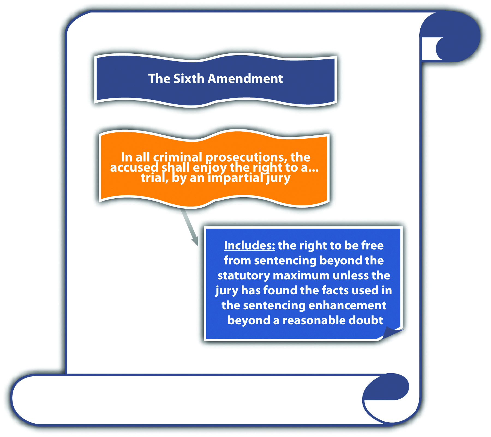

Source: Image courtesy of Tara Storm.
Those who wrote our constitutions knew from history and experience that it was necessary to protect against unfounded criminal charges brought to eliminate enemies and against judges too responsive to the voice of higher authority.
Duncan v. Louisiana, cited in Section 3.2 "The Due Process and Equal Protection Clauses"
In addition to statutory and common-law defenses, a criminal defendant has extensive protections that are set forth in the United States Constitution. As stated earlier in this book, the federal Constitution is applicable in all criminal cases because the government is prosecuting. State constitutions typically mirror the federal Constitution because it sets the minimum standard of protection that is guaranteed to all citizens. States can and often do provide more constitutional protections to criminal defendants than the federal Constitution, as long as those state protections do not violate notions of federal supremacy. In this chapter, the federal Constitution is analyzed with reference to state constitutional protections when relevant.
Generally, two types of constitutional protections exist. First, a defendant can challenge the constitutionality of a criminal statute or ordinance (from this point forward, the term statute includes ordinances unless otherwise noted). Recall from Chapter 1 "Introduction to Criminal Law" that these codified laws cannot conflict with or attempt to supersede the Constitution. An attack on the constitutionality of a statute can be a claim that the statute is unconstitutional on its faceThe wording of a statute is unconstitutional., is unconstitutional as appliedThe enforcement of a statute is unconstitutional., or both. A statute is unconstitutional on its face when its wording is unconstitutional. A statute is unconstitutional as applied when its enforcement is unconstitutional. The difference between the two is significant. If a statute is unconstitutional on its face, it is invalid under any circumstances. If the statute is unconstitutional as applied, it is only unconstitutional under certain circumstances.
A second type of constitutional protection is procedural. The defendant can protest an unconstitutional procedure that occurs during prosecution. Procedure during prosecution includes, but is not limited to, arrest, interrogation, search, filing of charges, trial, and appeal. The defendant can make a motion to dismiss the charges, suppress evidence, or declare a mistrial. The defendant can also appeal and seek to reverse a conviction, among other remedies.
This book concentrates on criminal law rather than criminal procedure, so the bulk of this chapter is devoted to unconstitutional criminal statutes, rather than unconstitutional procedures. The exception is the right to a jury trial, which is discussed shortly.
Bill is on trial for obstructing a public sidewalk. Bill was arrested for standing in front of a restaurant’s entrance with a sign stating “will eat any and all leftovers.” The city ordinance Bill violated makes it a misdemeanor to “stand or sit on a public sidewalk with a sign.” To save money, the judge presiding over Bill’s trial declares that Bill will have a bench trial, rather than a jury trial. In this example, Bill can constitutionally attack the city ordinance for violating his freedom of speech because it prohibits holding a sign. The city ordinance appears unconstitutional on its face and as applied to Bill. Bill can also constitutionally attack his bench trial because he has the right to a jury trial. He could do this by making a motion to declare a mistrial, by petitioning an appellate court to halt the trial, or by appeal after a judgment of conviction.
Figure 3.1 Constitutional Protections

As stated previously in this book, courts review statutes to ensure that they conform to the Constitution pursuant to their power of judicial review. Courts generally use different standards of review when constitutional protections are at stake. Typically, a court balances the government’s interest in regulating certain conduct against an individual’s interest in a constitutionally protected right. This balancing of interests varies depending on the right at stake. If a constitutional right is fundamental, the court uses strict scrutinyA standard of judicial review used when a statute encroaches on a fundamental constitutional right; the statute is unconstitutional unless it is supported by a compelling government interest and uses the least restrictive means. to analyze the statute at issue. A statute that violates or inhibits fundamental constitutional protections is presumptively invalid and can be upheld only if it uses the least restrictive means possible. The government also must prove the statute is supported by a compelling government interest. When the challenge is based on discrimination under the equal protection clause, the court may use a lower standard, called the rational basis testA standard of judicial review occasionally used when analyzing a statute pursuant to the equal protection clause; the statute is unconstitutional unless it is rationally related to a legitimate government interest.. The rational basis test allows a statute to discriminate if the statute is rationally related to a legitimate government interest. Most constitutional rights are considered fundamental and trigger the strict scrutiny of the courts.
Review the example regarding Bill, who was arrested essentially for standing and holding a sign. The US Supreme Court has held that freedom of speech is a fundamental right. Thus a court reviewing the ordinance in Bill’s case will hold the ordinance presumptively invalid, unless the government can demonstrate a compelling interest in enacting it, and that it used the least restrictive means possible. The ordinance is broadly written to include all signs, and preventing individuals from holding signs does not serve a compelling government interest, so this difficult standard will probably result in the court holding the ordinance unconstitutional.
The legislative branch cannot punish defendants without a trial or enact retroactive criminal statutes pursuant to the Constitution’s prohibition against bill of attainderA statute that punishes a defendant without a trial. and ex post facto lawsA criminal statute that punishes a defendant retroactively.. Article 1, § 9, clause 3 states, in pertinent part, “No Bill of Attainder or ex post facto Law shall be passed.” The prohibition on bill of attainder and ex post facto laws is extended to the states in Article 1, § 10, clause 1: “No State shall…pass any Bill of Attainder, ex post facto Law.” Many state constitutions also prohibit ex post facto legislative action, mirroring the federal Constitution.Indiana Constitution, art. I, § 24, accessed October 4, 2010, http://www.law.indiana.edu/uslawdocs/inconst/art-1.html.
Bill of attainder is when the legislative branch of government punishes the defendant without a trial. The drafters of the Constitution wanted to ensure that criminal defendants have a full and fair adjudication of their rights before the government imposes punishment. Bill of attainder is usually accomplished by a statute that targets an individual or group of individuals for some type of government sanction. Bill of attainder protection enforces separation of powers by eliminating the ability of the legislature to impose criminal punishment without a trial conducted by the judicial branch.U.S. v. Brown, 381 U.S. 437 (1965), accessed October 2, 2010, http://supreme.justia.com/us/381/437/case.html.
Brianne is a member of the Communist party. Brianne applies for a job as a teacher at her local elementary school and is refused, based on this statute: “Members of any subversive group, including the Communist party, cannot hold public office nor teach for a public institution.” Brianne could attack this statute as a bill of attainder. Its provisions, targeting members of the Communist party or any other subversive group, punish by eliminating career opportunities. The members targeted are punished without a trial or any adjudication of their rights. Thus this statute allows the legislature to impose a sanction without a trial in violation of the Constitution’s prohibited powers.
An ex post facto law punishes an individual retroactively, and severely encroaches on notions of fairness. There are three types of ex post facto laws. First, a law is ex post facto if it punishes behavior that occurred before the law was in effect. Second, ex post facto laws may increase the punishment for the offense after the crime occurred. Third, a law can be ex post facto if it increases the possibility of conviction after the crime occurred.
A state murder statute defines murder as the killing of a human being, born alive. The state legislature amends this statute to include the killing of a fetus, with the exception of abortion. The amendment extends the application of the statute to all criminal fetus killings that occurred before the statute was changed. This language punishes defendants for behavior that was legal when committed. If the state attempts to include this language, a court can strike the statute for violating the prohibition against ex post facto laws.
In the preceding example about amending the murder statute, the state also amends the statute to increase the penalty for murder to the death penalty. Before the amendment, the penalty for murder was life in prison without the possibility of parole. The state cannot give the death penalty to defendants who committed murder before the statute was amended. This is considered ex post facto because it increases the punishment for the offense after the crime is committed.
In the preceding example, the state amends the murder statute to remove the statute of limitationsA statute that limits the time period for a prosecution., which is the time limit on prosecution. Before the amendment, the statute of limitations was fifty years. The state cannot prosecute defendants who committed murder more than fifty years ago, pursuant to the amendment. This is considered ex post facto because it increases the chance of conviction after the crime is committed.
Changes that benefit a criminal defendant are not considered ex post facto and may be applied retroactively. In the preceding example, if the state amended the murder statute to shorten the statute of limitations, this change actually benefits defendants by making it more difficult to convict them. Thus this amendment would be constitutional.
Ex post facto protection applies only to criminal laws. Laws that raise fees or taxes after payment are civil rather than criminal in nature. Thus these retroactive increases do not exceed governmental authority and are constitutional.
Figure 3.2 The Constitution’s Prohibited Powers

Answer the following questions. Check your answers using the answer key at the end of the chapter.
Although the legislative branch’s prohibited powers are in Article I of the Constitution, the Bill of Rights contains most of the constitutional protections afforded to criminal defendants. The Bill of RightsThe first ten amendments to the Constitution. is the first ten amendments to the Constitution. In addition, the Fourteenth Amendment, which was added to the Constitution after the Civil War, has a plethora of protections for criminal defendants in the due process and equal protection clauses.
The Bill of Rights was originally written to apply to the federal government. However, US Supreme Court precedent has held that any constitutional amendment that is implicit to due process’s concept of ordered liberty must be incorporated into the Fourteenth Amendment’s protections and applied to the states.Duncan v. Louisiana, 391 U.S. 145 (1968), accessed October 20, 2010, http://caselaw.lp.findlaw.com/scripts/getcase.pl?court=us&vol=391&invol=145. This doctrine is called selective incorporationApplying the Bill of Rights’ constitutional protections to the states through the Fourteenth Amendment., and it includes virtually all the constitutional protections in the Bill of Rights. Thus although the original focus of the Bill of Rights may have been limiting the federal government, modern interpretations of the Constitution ensure that its protections also extend to all levels of state and local government.
The due process clauseA clause in the Fifth Amendment (which applies to the federal government) and the Fourteenth Amendment (which applies to the state government) providing that no individual will be deprived of life, liberty, or property without due process of law. states, “No person shall…be deprived of life, liberty, or property, without due process of law.” The due process clause in the Fifth Amendment applies to federal crimes and federal criminal prosecutions. The federal due process clause is mirrored in the Fourteenth Amendment, which guarantees due process of law in state criminal prosecutions. Most states have a similar provision in their constitutions.Missouri Constitution, art. I, § 10, accessed October 10, 2010, http://www.sos.mo.gov/pubs/missouri_constitution.pdf.
Substantive due processThe government cannot unreasonably encroach on an individual’s substantive constitutional rights. protects individuals from an unreasonable loss of substantive rights, such as the right to speak freely and the right to privacy. Procedural due processThe government cannot criminally punish individuals without providing notice and an opportunity to be heard. protects individuals from being criminally punished without notice and an opportunity to be heard. Both substantive and procedural due processes ensure that individuals are not denied their life (capital punishment), liberty (incarceration), or property (forfeiture) arbitrarily.
Void for vaguenessA criminal statute so imprecisely worded that it gives too much discretion to law enforcement, is unevenly applied, and fails to provide notice of what is criminal, violating the right to due process. challenges the wording of a statute under the due process clause. A statute is void for vagueness if it uses words that are indefinite or ambiguous. Statutes that are not precisely drafted do not provide notice to the public of exactly what kind of behavior is criminal. In addition, and more important, they give too much discretion to law enforcement and are unevenly enforced.U.S. v. White, 882 F.2d 250 (1989), accessed October 6, 2010, http://scholar.google.com/scholar_case?case=12667022335593752485&hl=en&as_sdt=2&as_vis=1&oi=scholarr. With a void for vagueness challenge, the statute must be so unclear that “men of common intelligence must guess at its meaning,”Connally v. General Construction Co., 269 U.S. 385 (1926), accessed October 3, 2010, http://supreme.justia.com/us/269/385/case.html. which is an objective standard.
A state legislature enacts a statute that criminalizes “inappropriate attire on public beaches.” Larry, a law enforcement officer, arrests Kathy for wearing a two-piece bathing suit at the beach because in his belief, women should wear one-piece bathing suits. Two days later, Burt, another law enforcement officer, arrests Sarah for wearing a one-piece bathing suit at the beach because in his belief, women should not be seen in public in bathing suits. Kathy and Sarah can attack the statute on its face and as applied as void for vagueness. The term “inappropriate” is unclear and can mean different things to different people. Thus it gives too much discretion to law enforcement, is subject to uneven application, and does not give Kathy, Sarah, or the public adequate notice of what behavior is criminal.
A statute is overbroadA statute that criminalizes both constitutionally protected and constitutionally unprotected conduct, violating the right to due process. if it criminalizes both constitutionally protected and constitutionally unprotected conduct. This challenge is different from void for vagueness, although certain statutes can be attacked on both grounds. An overbroad statute criminalizes too much and needs to be revised to target only conduct that is outside the Constitution’s parameters.
A state legislature enacts a statute that makes it criminal to photograph “nude individuals who are under the age of eighteen.” This statute is probably overbroad and violates due process. While it prohibits constitutionally unprotected conduct, such as taking obscene photographs of minors, it also criminalizes First Amendment protected conduct, such as photographing a nude baby.
Figure 3.3 The Due Process Clause

The Fourteenth Amendment states in relevant part, “nor shall any State…deny to any person within its jurisdiction the equal protection of the laws.” The equal protection clauseA clause in the Fourteenth Amendment that prohibits the state government from enacting statutes that arbitrarily discriminate. applies to the state government. State constitutions generally have a similar provision.California Constitution, art. I, § 7, accessed October 4, 2010, http://www.leginfo.ca.gov/.const/.article_1. The equal protection clause prevents the state government from enacting criminal laws that discriminate in an unreasonable and unjustified manner. The Fifth Amendment due process clause prohibits the federal government from discrimination if the discrimination is so unjustifiable that it violates due process of law.Bolling v. Sharpe, 347 U.S. 497 (1954), accessed October 4, 2010, http://scholar.google.com/scholar_case?case=16234924501041992561&hl=en&as_sdt=2&as_vis=1&oi=scholarr.
The prohibition on governmental discrimination is not absolute; it depends on the class of persons targeted for special treatment. In general, court scrutiny is heightened according to a sliding scale when the subject of discrimination is an arbitrary classification. Arbitrary means random and often includes characteristics an individual is born with, such as race or national origin. The most arbitrary classifications demand strict scrutiny, which means the criminal statute must be supported by a compelling government interest. Statutes containing classifications that are not arbitrary must have a rational basis and be supported by a legitimate government interest.
Criminal statutes that classify individuals based on their race must be given strict scrutiny because race is an arbitrary classification that cannot be justified. Modern courts do not uphold criminal statutes that classify based on race because there is no government interest in treating citizens of a different race more or less harshly.Loving v. Virginia, 388 U.S. 1 (1967), accessed October 4, 2010, http://www.law.cornell.edu/supct/html/historics/USSC_CR_0388_0001_ZO.html.
Criminal statutes that have a rational basis for discrimination and are supported by a legitimate government interest can discriminate, and frequently do. Criminal statutes that punish felons more severely when they have a history of criminal behavior, for example, three-strikes statutes, are supported by the legitimate government interests of specific and general deterrence and incapacitation. Note that the basis of the discrimination, a criminal defendant’s status as a convicted felon, is rational, not arbitrary like race. Thus although these statutes discriminate, they are constitutional pursuant to the equal protection clause.
Figure 3.4 The Equal Protection Clause
Answer the following questions. Check your answers using the answer key at the end of the chapter.
The First AmendmentProhibits the government from suppressing speech, which includes any form of expression or expressive conduct. states, in relevant part, “Congress shall make no law…abridging the freedom of speech.” Although this language specifically targets federal Congress, the First Amendment has been held applicable to the states by virtue of selective incorporation.Gitlow v. New York, 268 U.S. 652 (1925), accessed October 5, 2010, http://supreme.justia.com/us/268/652/case.html. Most state constitutions have a similar provision protecting freedom of speech.Illinois Constitution, art. I, § 4, accessed October 9, 2010, http://www.ilga.gov/commission/lrb/con1.htm.
Freedom of speech has been the focus of countless judicial opinions. To summarize US Supreme Court precedent, the word speech has been interpreted to cover virtually any form of expression, including verbal and written words, pictures, photographs, videos, and songs. First Amendment speech also includes expressive conduct such as dressing a certain way,Tinker v. Des Moines Independent Community School District, 393 U.S. 503 (1969), accessed October 8, 201, http://supreme.justia.com/us/393/503/case.html. flag burning,Texas v. Johnson, 491 U.S. 397 (1989), accessed October 5, 2010, http://caselaw.lp.findlaw.com/scripts/getcase.pl?court=us&vol=491&invol=397. and cross burning.R.A.V. v. St. Paul, 505 U.S. 377 (1992), accessed October 5, 2010, http://caselaw.lp.findlaw.com/scripts/getcase.pl?court=us&vol=505&invol=377.
In general, courts have examined the history of the Constitution and the policy supporting freedom of speech when creating exceptions to its coverage. Modern decisions afford freedom of speech the strictest level of scrutiny; only a compelling government interest can justify an exception, which must use the least restrictive means possible.Sable Communis. of California, Inc. v. FCC, 492 U.S. 115 (1989), accessed October 5, 2010, http://supreme.justia.com/us/492/115/case.html. For the purpose of brevity, this book reviews the constitutional exceptions to free speech in statutes criminalizing fighting words, incitement to riot, hate crimes, and obscenity.
Figure 3.5 The First Amendment

Although the First Amendment protects peaceful speech and assembly, if speech creates a clear and present danger to the public, it can be regulated.Schenck v. U.S., 249 U.S. 47 (1919), accessed October 5, 2010, http://supreme.justia.com/us/249/47/case.html. This includes fighting words, “those which by their very utterance inflict injury or tend to incite an immediate breach of the peace.”Chaplinsky v. New Hampshire, 315 U.S. 568, 572 (1942), accessed October 6, 2010, http://caselaw.lp.findlaw.com/cgi-bin/getcase.pl?friend=wisbar&navby=case&court=us&vol=315&invol=568&pageno=574.
Any criminal statute prohibiting fighting words must be narrowly tailored and focus on imminent rather than future harm. Modern US Supreme Court decisions indicate a tendency to favor freedom of speech over the government’s interest in regulating fighting words, and many fighting words statutes have been deemed unconstitutional under the First Amendment or void for vagueness and overbreadth under the Fifth Amendment and Fourteenth Amendment due process clause.Lewis v. City of New Orleans, 415 U.S. 130 (1974), accessed October 7, 2010, http://caselaw.lp.findlaw.com/scripts/getcase.pl?navby=case&court=us&vol=415&invol=130.
Georgia enacted the following criminal statute: “Any person who shall, without provocation, use to or of another, and in his presence…opprobrious words or abusive language, tending to cause a breach of the peace…shall be guilty of a misdemeanor” (Ga. Code § 26-6303). The US Supreme Court determined that this statute was overbroad, void for vagueness, and unconstitutional under the First Amendment.Gooding v. Wilson, 405 U.S. 518 (1972), accessed October 7, 2010, http://scholar.google.com/scholar_case?case=3138831397470557431&hl=en&as_sdt=2&as_vis=1&oi=scholarr.
The Court held that the dictionary definitions of “opprobrious” and “abusive” give them greater reach than fighting words. Thus the statute is overbroad and does not restrict its prohibition to imminent harm. Opprobrious and abusive have various meanings, so the statute is also subject to uneven enforcement and is void for vagueness. As the Court stated, this language “licenses the jury to create its own standard in each case.”Gooding v. Wilson, 405 U.S. 518, 528 (1972), quoting Herndon v. Lowry, 301 U.S. 242, 263 (1937), accessed October 7, 2010, http://scholar.google.com/scholar_case?case=3138831397470557431&hl=en&as_sdt=2&as_vis=1&oi=scholarr.
Incitement to riot can also be regulated under the clear and present danger exception. Similar to fighting words, an incitement to riot statute must prohibit imminent lawless action.Brandenburg v. Ohio, 395 U.S. 444 (1969), accessed October 6, 2010, http://supreme.justia.com/us/395/444/case.html. Statutes that prohibit simple advocacy with no imminent threat or harm cannot withstand the First Amendment’s heightened scrutiny.
Ohio enacted a statute that criminalized “advocat[ing]…the duty, necessity, or propriety of crime, sabotage, violence, or unlawful methods of terrorism as a means of accomplishing industrial or political reform” and “voluntarily assembl[ing] with any society, group or assemblage of persons formed to teach or advocate the doctrines of criminal syndicalism” (Ohio Rev. Code Ann. § 2923.13). A Ku Klux Klan leader was convicted under the statute after the media broadcast films of him leading a KKK meeting. The US Supreme Court held, “Accordingly, we are here confronted with a statute which, by its own words and as applied, purports to punish mere advocacy and to forbid, on pain of criminal punishment, assembly with others merely to advocate the described type of action. [Footnote 4] Such a statute falls within the condemnation of the First and Fourteenth Amendments.”Brandenburg v. Ohio, 395 U.S. 444, 449 (1969), accessed October 6, 2010, http://supreme.justia.com/us/395/444/case.html.
Many states and the federal government have enacted hate crimes statutes. When hate crimes statutes criminalize speech, including expressive conduct, a First Amendment analysis is appropriate. When hate crimes statutes enhance a penalty for criminal conduct that is not expressive, the First Amendment is not applicable.Wisconsin v. Mitchell, 508 U.S. 47 (1993), accessed October 7, 2010, http://www.law.cornell.edu/supct/html/92-515.ZO.html.
Hate crimes statutes punish conduct that is targeted at specific classifications of people. These classifications are listed in the statute and can include race, ethnicity, gender, sexual orientation, or religion. Hate crimes statutes that criminalize speech can be constitutional under the clear and present danger exception if they are tailored to apply only to speech or expressive conduct that is supported by the intent to intimidate.Virginia v. Black, 535 U.S. 343 (2003), accessed October 5, 2010, http://caselaw.lp.findlaw.com/scripts/getcase.pl?court=us&vol=000&invol=01-1107. This can include speech and expressive conduct such as threats of imminent bodily injury, death, or cross burning. Hate crimes statutes must be narrowly drafted, and cannot be void for vagueness or overbroad.
Hate crimes statutes that criminalize the content of speech, like a prejudicial opinion about a certain race, ethnicity, gender, sexual orientation, or religion are unconstitutional under the First Amendment.R.A.V. v. St. Paul, 505 U.S. 377 (1992), accessed October 5, 2010, http://caselaw.lp.findlaw.com/scripts/getcase.pl?court=us&vol=505&invol=377. Statutes of this nature have been held to have a “chilling effect” on free expression by deterring individuals from expressing unpopular views, which is the essence of free speech protection. Although this type of speech can stir up anger, resentment, and possibly trigger a violent situation, the First Amendment protects content-based speech from governmental regulation without strict scrutiny exposing a compelling government interest.
St. Paul, Minnesota, enacted the Bias-Motivated Crime Ordinance, which prohibited the display of a symbol that a person knows or has reason to know “arouses anger, alarm or resentment in others on the basis of race, color, creed, religion or gender” (Ordinance, St. Paul, Minn., Legis. Code § 292.02 (1990)). In R.A.V. v. St. Paul, 505 U.S. 377 (1992), the US Supreme Court held that this ordinance was unconstitutional on its face because regulation was based on the content of speech, with no additional requirement for imminent lawless action. The Court held that the ordinance did not proscribe the use of fighting words (the display of a symbol) toward specific groups of individuals, which would be an equal protection clause challenge. Instead, the Court determined that the statute prohibited the use of specific types of fighting words, for example, words that promote racial hatred, and this is impermissible as viewpoint-based censorship. As the Court stated, “[c]ontent-based regulations are presumptively invalid.”R.A.V. v. St. Paul, 505 U.S. 377, 382 (1992), accessed October 5, 2010, http://caselaw.lp.findlaw.com/scripts/getcase.pl?court=us&vol=505&invol=377.
Virginia enacted a statute that makes it criminal “for any person…, with the intent of intimidating any person or group…, to burn…a cross on the property of another, a highway or other public place” (Va. Code Ann. § 18.2-423). The US Supreme Court held this statute constitutional under the First Amendment because it did not single out cross burning indicating racial hatred, as the Minnesota cross-burning ordinance did. The Court stated, “Unlike the statute at issue in R. A. V., the Virginia statute does not single out for opprobrium only that speech directed toward ‘one of the specified disfavored topics.’ Id., at 391.” It does not matter whether an individual burns a cross with intent to intimidate because of the victim’s race, gender, or religion, or because of the victim’s “political affiliation, union membership, or homosexuality.”Virginia v. Black, 535 U.S. 343, 359 (2003), accessed October 5, 2010, http://caselaw.lp.findlaw.com/scripts/getcase.pl?court=us&vol=000&invol=01-1107.
Another exception to free speech is obscenity. Obscenity is usually conveyed by speech, such as words, pictures, photographs, songs, videos, and live performances. However, obscenity is not protected speech under the First Amendment.Roth v. United States, 354 U.S. 476 (1957), accessed October 7, 2010, http://supreme.justia.com/us/354/476/case.html.
In Miller v. California, 413 U.S. 15 (1973), the US Supreme Court devised a three-part test to ascertain if speech is obscene and subject to government regulation. Generally, speech is obscene if (1) the average person, applying contemporary community standards would find that the work, taken as a whole, appeals to the prurient interest in sex; (2) it depicts sexual conduct specifically defined by the applicable state law in a patently offensive way; and (3) it lacks serious literary, artistic, political, or scientific value.Miller v. California, 413 U.S. 15 (1973), accessed October 7, 2010, http://scholar.google.com/scholar_case?case=287180442152313659&hl=en&as_sdt=2&as_vis=1&oi=scholarr.
In Jenkins v. Georgia, 418 U.S. 153 (1974), the US Supreme Court viewed the film Carnal Knowledge to determine whether the defendant could be constitutionally convicted under an obscenity statute for showing it at a local theater. The Court concluded that most of the film’s sexual content was suggestive rather than explicit, and the only direct portrayal of nudity was a woman’s bare midriff. Thus although a jury convicted the defendant after viewing the film, the Court reversed the conviction, stating that the film does not constitute the hard-core pornography that the three-part test for obscenity isolates from the First Amendment’s protection. The Court stated, “Appellant’s showing of the film ‘Carnal Knowledge’ is simply not the ‘public portrayal of hard core sexual conduct for its own sake, and for the ensuing commercial gain’ which we said was punishable in Miller, Id., at 35.”Jenkins v. Georgia, 418 U.S. 153, 161 (1974), accessed October 7, 2010, http://caselaw.lp.findlaw.com/scripts/getcase.pl?navby=case&court=us&vol=418&invol=153.
Statutes that regulate nude dancing have also been attacked under the First Amendment. Although the US Supreme Court has ruled that nude dancing is constitutionally protected expression, it has also upheld reasonable restrictions on nudity, such as requirements that nude dancers wear pasties and a g-string.City of Erie et al v. Pap’s A.M., 529 U.S. 277 (2000), accessed October 11, 2010, http://caselaw.lp.findlaw.com/scripts/getcase.pl?court=us&vol=000&invol=98-1161.
Table 3.1 Statutes Prohibiting Speech under a First Amendment Exception
| Conduct Prohibited | Potential Constitutional Challenge | Necessary Statutory Requirements |
|---|---|---|
| Fighting words | First Amendment, vague, overbreadth | Must proscribe imminent lawless action, be narrowly drafted, precise |
| Incitement to riot | First Amendment, vague, overbreadth | Must proscribe imminent lawless action, be narrowly drafted, precise; cannot prohibit simple advocacy |
| Hate speech | First Amendment, vague, overbreadth | Must be narrowly drafted, precise; must target speech supported by the intent to intimidate; cannot be content based without a compelling government interest |
| Obscenity | First Amendment, vague, overbreadth | Must be narrowly drafted, precise; must target speech that appeals to a prurient interest in sex, depicts sex in a patently offensive way, lacks serious social value |
| Nude dancing | First Amendment, vague, overbreadth | Can be reasonably restricted |
Should Depictions of Animal Cruelty Be Protected by the First Amendment?
Congress enacted 18 U.S.C. § 48, which criminalizes commercial creation, sale, or possession of a visual or auditory depiction in which a living animal is intentionally maimed, mutilated, tortured, wounded, or killed, if that conduct violates federal or state law where the creation, sale, or possession takes place. In United States v. Stevens, 552 U.S. 442 (2010), the US Supreme Court held that this statute is facially overbroad and violative of the First Amendment. Specifically, the Court held that depictions of animal cruelty are entitled to First Amendment protection, and the statute is presumptively invalid because it is content based. In addition, the Court stated that the government’s interest in censoring this type of material is not compelling enough to outweigh the prohibition on protected speech and that the statute on its face included material that may have redeeming social value. The Court’s opinion is available at this link: http://www.law.cornell.edu/supct/html/08-769.ZO.html.
Check your answers to both questions using the answer key at the end of the chapter.
American Civil Liberties Union (ACLU) Explains the U.S. v. Stevens Case
This video of ACLU legal director Steven R. Shapiro analyzes the U.S. v. Stevens case:
Answer the following questions. Check your answers using the answer key at the end of the chapter.
The federal Constitution does not explicitly protect privacy. However, several of the amendments in the Bill of Rights ensure and protect individual decision making and autonomy from governmental intrusion. Thus modern interpretations of the Constitution by the US Supreme Court have created a right to privacyThe Constitution’s protection of individual autonomy against government intrusion..Griswold v. Connecticut, 381 U.S. 479 (1965), accessed October 9, 2010, http://caselaw.lp.findlaw.com/scripts/getcase.pl?court=us&vol=381&invol=479. This right is considered fundamental and subject to strict scrutiny; only a compelling government interest can justify a statute encroaching on its protections. Many states include an explicit right to privacy in their state constitutions.Hawaii Constitution, art. I, § 6, accessed October 9, 2010, http://hawaii.gov/lrb/con/conart1.html.
US Supreme Court precedent has held that the right to privacy comes from the First, Third, Fourth, Fifth, Ninth, and Fourteenth Amendments. The First Amendment protects the right to speak freely, assemble peacefully, and worship according to individual choice. The Third Amendment prohibits the government from forcing individuals to quarter, house, or feed soldiers. The Fourth Amendment prevents the government from unreasonably searching or seizing an individual or an individual’s property. The Fifth and Fourteenth Amendments provide due process of law before the government can deprive an individual of life, liberty, or property. The Ninth Amendment states that rights not explicitly set forth in the Constitution may still exist. Taken together, these amendments indicate that the Constitution was written to erect a barrier between individuals and an overly intrusive and regulatory government. In modern society, this right to privacy guarantees the right to use birth control, the right to an abortion, and the right to participate in consensual sexual relations.
The right to privacy was first established in the US Supreme Court case of Griswold v. Connecticut, 381 U.S. 479 (1965). In Griswold, the defendants, Planned Parenthood employees, were convicted of prescribing birth control as accessories under two Connecticut statutes that criminalized the use of birth control. The Court found the statutes unconstitutional, holding that the First, Third, Fourth, Fifth, and Ninth Amendments created a “penumbra” of unenumerated constitutional rights, including zones of privacy.Griswold v. Connecticut, 381 U.S. 479, 483 (1965), accessed October 9, 2010, http://caselaw.lp.findlaw.com/scripts/getcase.pl?court=us&vol=381&invol=479. The Court stated that marital privacy, especially, deserved the utmost protection from governmental intrusion. The Griswold case set the stage for other fundamental privacy rights related to intimacy, including the right to an abortion and the right to consensual sexual relations.
The right to an abortion was set forth in the seminal US Supreme Court case of Roe v. Wade, 410 U.S. 113 (1973). In Roe, which examined a Texas statute criminalizing abortion, the Court held that every woman has the right to a legal abortion through the first trimester of pregnancy. In the aftermath of the Roe decision, more than half of the nation’s state laws criminalizing abortion became unconstitutional and unenforceable. The Court held that state government has a legitimate interest in protecting a pregnant woman and her fetus from harm, which becomes a compelling interest when she has reached full term. However, during the first trimester, health concerns from abortion do not justify the erosion of a woman’s right to make the abortion decision.Roe v. Wade, 410 U.S. 113, 162 (1973), accessed October 10, 2010, http://www.law.cornell.edu/supct/html/historics/USSC_CR_0410_0113_ZO.html. The Court thereafter struck down the Texas antiabortion statute as overbroad under the Fourteenth Amendment due process clause. Specifically, the Court held that during the first trimester of pregnancy, the abortion decision must be left to the pregnant woman and her attending physician.Roe v. Wade, 410 U.S. 113, 164 (1973), accessed October 10, 2010, http://www.law.cornell.edu/supct/html/historics/USSC_CR_0410_0113_ZO.html. In a recent decision post-Roe, the Court upheld a federal statute criminalizing partial-birth abortion, on the grounds that it was not void for vagueness or overbroad under the Fifth Amendment due process clause.Gonzales v. Carhart, 127 S. Ct. 1610 (2007), accessed October 11, 2010, http://scholar.google.com/scholar_case?case=7079370668659431881&hl=en&as_sdt=2&as_vis=1&oi=scholarr.
Even in the aftermath of Roe v. Wade, courts were reluctant to interfere with states’ interests in enacting and enforcing statutes that criminalized sexual conduct. In Bowers v. Hardwick, 478 U.S. 186 (1986), the US Supreme Court upheld a Georgia statute that made it a crime to engage in consensual sodomy.Bowers v. Hardwick, 478 U.S. 186 (1986), accessed October 11, 2010, http://caselaw.lp.findlaw.com/scripts/getcase.pl?court=us&vol=478&invol=186. The Court stated that there is no fundamental right to engage in sodomy and that the history of protecting marriage and family relationships should not be extended in this fashion.Bowers v. Hardwick, 478 U.S. 186, 194–195 (1986), accessed October 11, 2010, http://caselaw.lp.findlaw.com/scripts/getcase.pl?court=us&vol=478&invol=186. Many years later, the Court changed its stance and overruled Bowers in Lawrence v. Texas, 539 U.S. 558 (2003). In Lawrence, a Texas statute criminalizing homosexual sodomy was attacked on its face and as applied to two men who were discovered engaging in sex in their bedroom during a law enforcement search for weapons. The Lawrence decision rested on the due process clause of the Fourteenth Amendment. The Court held that intimate choices are a form of liberty protected by the due process clause, whether or not consenting individuals are married. The Court thereafter struck down the Texas sodomy statute because it was not justified by a sufficient government interest.Lawrence v. Texas, 539 U.S. 558 (2003), accessed October 11, 2010, http://caselaw.lp.findlaw.com/scripts/getcase.pl?court=us&vol=000&invol=02-102.
Most states have statutes criminalizing consensual incest, which is sexual intercourse between family members who cannot legally marry. If an individual attacks a consensual incest statute as unconstitutional under the right to privacy, the court will balance the state’s interest in preventing harm to an infant, such as birth defects, with an individual’s interest in having consensual sexual intercourse with a family member, using strict scrutiny. If the court finds that the government interest is compelling, it can uphold the statute as long as it is not vague or overbroad.
Figure 3.6 The Right to Privacy
Answer the following questions. Check your answers using the answer key at the end of the chapter.
Although the federal Constitution specifically references a right to bear arms in the Second AmendmentProtects an individual’s right to possess a usable handgun in the home for self-defense., the US Supreme Court has not interpreted this amendment in a significant fashion until recently. The Second Amendment provides “[a] well regulated Militia, being necessary to the security of a free state, the right of the people to keep and bear Arms, shall not be infringed.” Many state constitutions have a similar provision.Eugene Volokh, “State Constitutional Right to Keep and Bear Arms Provisions,” UCLA website, accessed October 22, 2010, http://www.law.ucla.edu/volokh/beararms/statecon.htm. In 2008, the US Supreme Court explored the Second Amendment and its effect on weapons possession in a case attacking Washington, DC, firearms legislation.District of Columbia v. Heller, 128 S. Ct. 2783 (2008), accessed October 13, 2010, http://www.law.cornell.edu/supct/html/07-290.ZO.html.
In District of Columbia v. Heller, 128 S. Ct. 2783 (2008), the Court affirmed the Court of Appeals for the D.C. Circuit in striking provisions of the Firearms Control Regulations Act of 1975. The Court struck the portions of this act that banned the possession of handguns and mandated that all legal firearms must be kept unloaded and disassembled while in the home. Although the District Court held that the Second Amendment applies only to the militia, the US Supreme Court emphasized that the Second Amendment is exercised individually and belongs to all Americans. The Court also expanded previous interpretations of the Second Amendment to cover an individual’s right to possess a usable handgun in the home for self-defense. The Heller case is unprecedented and is the first to address individual handgun possession under the Second Amendment. However, the Heller ruling is narrow and specifically excludes firearms restrictions on felons, the mentally ill, firearm possession in or near schools or government buildings, and the commercial sale of firearms. The Heller decision also fails to extend the Second Amendment’s protections to the states because Washington, DC, is a federal enclave.
In McDonald v. Chicago, 130 S.Ct. 3020 (2010), the US Supreme Court revisited the gun possession issue by reviewing and rejecting as unconstitutional a handgun ban in the city of Chicago, Illinois. In McDonald, the Court took the extra step of extending the Heller ruling to the states, holding that the Second Amendment applies to the states via its selective incorporation into the due process clause. However, McDonald did not expand the ruling in Heller in other ways and reemphasized the Heller exceptions of firearms restrictions on felons, the mentally ill, firearm possession in or near schools or government buildings, and the commercial sale of firearms.
Dirk is a public middle-school janitor. Occasionally, with the permission of the principal, Dirk stays overnight in an outbuilding on campus when he works a particularly late shift. Dirk wants to keep a handgun in the outbuilding, for protection. If Dirk’s state has a statute prohibiting the possession of a handgun within one mile of any public school, Dirk cannot keep a handgun in the outbuilding for self-defense. Modern US Supreme Court precedent holds that the Second Amendment protects an individual’s right to possess a handgun in the home for self-defense. However, this precedent specifically exempts firearm possession near schools. Unless newer precedent expands the ruling to include firearm possession near schools, the statute in Dirk’s state is constitutional.
Figure 3.7 The Second Amendment
Answer the following questions. Check your answers using the answer key at the end of the chapter.
The prohibition against cruel and unusual punishment comes from the Eighth AmendmentProhibits inhumane and disproportionate punishments., which states, “Excessive bail shall not be required, nor excessive fines imposed, nor cruel and unusual punishments inflicted.” State constitutions often have similar provisions.Texas Constitution, art. I, § 13, accessed October 22, 2010, http://www.statutes.legis.state.tx.us/SOTWDocs/CN/htm/CN.1.htm. Although the ban on cruel and unusual punishment relates directly to sentencing, which is a criminal procedure issue, criminal statutes mandating various penalties can be held unconstitutional under the Eighth Amendment just like statutes offending the due process clause, so a brief discussion is relevant to this chapter. Another facet of excessive punishment is a criminal sentencing enhancement that is based on facts not found beyond a reasonable doubt by a jury. This has been held to violate the Sixth AmendmentGuarantees a criminal defendant the right to a jury trial., which states, “In all criminal prosecutions, the accused shall enjoy the right to a…trial, by an impartial jury of the State and district wherein the crime shall have been committed.”
In this section, three issues are analyzed and discussed: the infliction of cruel punishment, a criminal sentence that is too severe, and a criminal sentence that is invalid under the right to a jury trial.
In general, the government must refrain from inflicting cruel or barbaric punishments on criminal defendants in violation of the Eighth Amendment. In particular, cases asserting that a criminal punishment is inhumane often focus on capital punishmentThe death penalty., which is the death penalty.
The death penalty has been used as a criminal punishment since the eighteenth century BC. American death penalty law is influenced by the British because the colonists brought English common-law principles, including capital punishment, with them to the New World. The first execution in America took place in 1608, for spying.Death Penalty Information Center, “Introduction to the Death Penalty,” deathpenaltyinfo.org website, accessed October 17, 2010, http://www.deathpenaltyinfo.org/part-i-history-death-penalty. Methods of execution and capital crimes varied from colony to colony. In the late 1700s, a movement to abolish the death penalty began, and in 1846 Michigan was the first state to eliminate the death penalty for all crimes except treason.Death Penalty Information Center, “Introduction to the Death Penalty,” deathpenaltyinfo.org website, accessed October 17, 2010, http://www.deathpenaltyinfo.org/part-i-history-death-penalty. Throughout the nineteenth and twentieth centuries, the United States fluctuated in its attitude toward capital punishment. Executions were at an all-time high in the 1930s.Death Penalty Information Center, “Introduction to the Death Penalty,” deathpenaltyinfo.org website, accessed October 17, 2010, http://www.deathpenaltyinfo.org/part-i-history-death-penalty. However, in 1972, in the landmark decision of Furman v. Georgia, 408 U.S. 238 (1972), the US Supreme Court held that Georgia’s death penalty statute, which gave the jury complete discretion to sentence a criminal defendant to death, was arbitrary and therefore authorized cruel and unusual punishment in violation of the Eighth Amendment. This decision invalidated death penalty statutes in forty states. Later, in 1976, the US Supreme Court case of Gregg v. Georgia, 428 U.S. 153 (1976), affirmed the procedure of a bifurcated trial, separating the guilt phase from the penalty phase for death penalty cases. Gregg also affirmed the death penalty’s constitutionality under the Eighth Amendment. Currently, thirty-four states and the federal government authorize the death penalty, while sixteen states and the District of Columbia do not.Death Penalty Information Center, “States with and without the Death Penalty,” deathpenaltyinfo.org website, accessed October 14, 2010, http://www.deathpenaltyinfo.org/states-and-without-death-penalty.
A claim that capital punishment is inhumane and therefore unconstitutional under the Eighth Amendment focuses on the method of execution. Throughout the history of the death penalty, many methods of execution have been employed, including shooting, hanging, electrocution, the gas chamber, and lethal injection. At the time of this writing, the law is in a state of flux as to which methods of execution are constitutional because many state and federal decisions have stricken virtually every method available. The current focus of the courts is lethal injection because it is one of the few methods that has not been condemned as unconstitutional. Most states that authorize the death penalty use lethal injection as the primary method of execution. In a recent statement on this issue, the US Supreme Court in Baze v. Rees, 128 S. Ct. 1520 (2008), held that Kentucky’s four-drug lethal injection procedure was not cruel and unusual punishment under the Eighth Amendment. In other states, including Missouri and Tennessee, federal courts using different facts have ruled the multidrug procedure unconstitutional.Death Penalty Information Center, “Lethal Injection: Constitutional Issue,” deathpenaltyinfo.org website, accessed October 14, 2010, http://www.deathpenaltyinfo.org/lethal-injection-constitutional-issue. It is impossible to predict the future of death penalty methodology under the Eighth Amendment because each case will be decided based on the circumstances presented. However, it is clear that the law in this area is ripe for a definitive statement of constitutionality under the Eighth Amendment’s cruel and unusual punishment clause.
Disproportionate punishment is a different issue than inhumane punishment, but it is still within the parameters of the Eighth Amendment. Disproportionate punishment asserts that a criminal punishment is too severe for the crime. Two criminal punishments garner many disproportionate punishment claims: capital punishment and punishment pursuant to three-strikesStatutes that enhance a sentence when a defendant commits a felony after a previous conviction for one or two serious or violent felonies. statutes.
Capital punishment can be disproportionate because it is too severe for the crime or because it is too severe for the criminal defendant.
Death is the ultimate punishment, so it must be equivalent to the crime the defendant committed. Although the states and the federal government have designated many capital crimes that may not result in death, for example, treason that does not lead to death, the US Supreme Court has confirmed that the death penalty is too severe for most crimes. In Coker v. Georgia, 433 U.S. 584 (1977), the Court held that capital punishment is disproportionate for the crime of raping an adult woman. Many years later in Kennedy v. Louisiana, 128 S. Ct. 2641 (2008), the Court extended the disproportionality principle to invalidate the death penalty for child rape. Kennedy maintained the distinction between crimes committed against individuals and crimes committed against the government, like treason. The only crime against an individual that currently merits the death penalty is criminal homicide, which is the unlawful killing of one human being by another. Criminal homicide is discussed in detail in Chapter 9 "Criminal Homicide".
Figure 3.8 Crack the Code

Recent US Supreme Court precedent has targeted specific classifications of criminal defendants for whom capital punishment is overly severe. Recent cases hold that the death penalty is cruel and unusual punishment for a criminal defendant who was a juvenile when the crime was committed,Roper v. Simmons, 543 U.S. 551 (2005), accessed October 15, 2010, http://scholar.google.com/scholar_case?case=16987406842050815187&hl=en&as_sdt=2&as_vis=1&oi=scholarr. who is mentally ill,Ford v. Wainwright, 477 U.S. 399 (1986), accessed October 15, 2010, http://scholar.google.com/scholar_case?case=7904262174469084060&hl=en&as_sdt=2&as_vis=1&oi=scholarr. or has an intellectual disabilityAtkins v. Virginia, 536 U.S. 304 (2002), accessed October 15, 2010, http://scholar.google.com/scholar_case?case=2043469055777796288&hl=en&as_sdt=2&as_vis=1&oi=scholarr. at the time of the scheduled execution. Although states vary in their classifications of juveniles (discussed in detail in Chapter 6 "Criminal Defenses, Part 2"), the Eighth Amendment prohibits capital punishment for an individual who was under eighteen years of age when he or she committed criminal homicide. Mental illness could cover a variety of disorders, but the US Supreme Court has held that a criminal defendant has a constitutional right to a determination of sanity before execution.Ford v. Wainwright, 477 U.S. 399, 401 (1986), accessed October 15, 2010, http://scholar.google.com/scholar_case?case=7904262174469084060&hl=en&as_sdt=2&as_vis=1&oi=scholarr. Intellectual disability is distinct from mental illness and is defined by the US Supreme Court as a substantial intellectual impairment that impacts everyday life, and was present at the defendant’s birth or during childhood.Atkins v. Virginia, 536 U.S. 304, 318 (2002), accessed October 15, 2010, http://scholar.google.com/scholar_case?case=2043469055777796288&hl=en&as_sdt=2&as_vis=1&oi=scholarr. However, this standard is broad, so states vary in their legislative definitions of this classification.Death Penalty Information Center, “State Statutes Prohibiting the Death Penalty for People with Mental Retardation,” deathpenaltyinfo.org website, accessed October 14, 2010, http://www.deathpenaltyinfo.org/state-statutes-prohibiting-death-penalty-people-mental-retardation.
Jerry is sentenced to death for rape. The state death penalty statute specifies death by decapitation. While on death row, Jerry begins to hear voices and is diagnosed as schizophrenic by the prison psychiatrist. The state schedules the execution anyway. In this example, the state death penalty statute is inhumane because death by decapitation is too severe a punishment for any crime. The death penalty statute is also disproportionate to the crime because execution is not a constitutional punishment for the crime of rape. Lastly, the death penalty statute is disproportionate to Jerry, the criminal defendant, because it is cruel and unusual to execute someone who is mentally ill.
California was the first state to enact a “three strikes and you’re out” law.Cal. Penal Code § 667, accessed October 15, 2010, http://www.threestrikes.org/tslaw.html. Generally, three-strikes statutes punish habitual offenders more harshly when they commit a second or third felony after an initial serious or violent felony.Cal. Penal Code § 667, accessed October 15, 2010, http://www.threestrikes.org/tslaw.html. To date, California’s three-strikes law is the toughest in the nation; it mandates a minimum twenty-five-year- to life sentence for felons convicted of a third strike. California enacted its three-strikes legislation after the kidnapping, rape, and murder of Polly Klaas by a habitual offender. Twenty-four states followed, indicating public support for the incapacitation of career criminals.Three Strikes and You’re Out, “States That Have Three Strikes Laws,” threestrikes.org website, accessed October 15, 2010, http://www.threestrikes.org/3strikestates.html.
Three-strikes statutes vary, but those most likely to be attacked as disproportionate count any felony as a strike after an initial serious or violent felony. Counting any felony might levy a sentence of life in prison against a criminal defendant who commits a nonviolent felony. However, the US Supreme Court has upheld lengthy prison sentences under three-strikes statutes for relatively minor second or third offenses, holding that they are not cruel and unusual punishment under the Eighth Amendment.Ewing v. California, 538 U.S. 11 (2003), accessed October 15, 2010, http://caselaw.lp.findlaw.com/scripts/getcase.pl?court=us&vol=000&invol=01-6978.
Figure 3.9 The Eighth Amendment
Modern US Supreme Court precedent has expanded the jury’s role in sentencing pursuant to the Sixth Amendment. Although a detailed discussion of sentencing procedure is beyond the scope of this book, a brief overview of sentencing and the roles of the judge and jury is necessary to a fundamental understanding of this important trial right, as is set forth in the following section.
As stated in Chapter 2 "The Legal System in the United States", the trier of fact decides the facts and renders a decision on innocence or guilt using beyond a reasonable doubt as the standard for the burden of proof. The trier of fact in a criminal prosecution is almost always a jury because of the right to a jury trial in the Sixth Amendment. Occasionally, the defendant waives the right to a jury trial and has a bench trial with a judge playing the role of trier of fact. Although the jury determines innocence or guilt during a jury trial, the verdict defines the end of their role as the trier of fact, and the judge sets the sentence. The death penalty is an exception to the jury’s limited role in sentencing; a jury must decide whether to sentence the defendant to death at a separate hearing after the trial has concluded.
Generally, criminal sentencing takes place after the trial. Although the sentencing procedure varies from state to state and from state to federal, a sentencing hearing is typically held after guilt has been determined at trial or after a guilty plea. For many years, judges have had almost exclusive control of sentencing. Although judges are restricted by the fact-finding done at trial, they can receive new evidence at sentencing if it is relevant. For example, a judge is bound by a jury determination that the defendant used a weapon when committing an armed robbery. However, the judge can accept new evidence at sentencing that reveals the defendant had two prior convictions for armed robbery and can enhance the sentence under a habitual offender or three-strikes statute.
Until recently, judges could use evidence received at the sentencing hearing to enhance a sentence beyond the statutory maximum by making a determination of the new facts to a preponderance of evidence. However, in Apprendi v. New Jersey, 530 U.S. 466 (2000), the US Supreme Court held that the right to a jury trial prohibits judges from enhancing criminal sentences beyond the statutory maximum based on facts not determined by a jury beyond a reasonable doubt. In Apprendi, the trial court enhanced the defendant’s sentence beyond the statutory maximum for possession of a firearm with an unlawful purpose under New Jersey’s hate crimes statute. Although the jury did not determine that the defendant’s crime was a hate crime, the judge accepted new evidence at sentencing that indicated the defendant’s shooting into a residence was racially motivated. The US Supreme Court reversed the New Jersey Supreme Court, which upheld the sentencing procedure. The Court held that other than evidence of a prior conviction, a judge cannot enhance a defendant’s sentence beyond the statutory maximum unless there has been a factual determination by a jury beyond a reasonable doubt of the facts supporting the sentencing enhancement. The Court based its holding on the Sixth Amendment right to a jury trial as incorporated and applied to the states through the Fourteenth Amendment due process clause.
Post-Apprendi, this holding was extended to federal sentencing guidelines in U.S. v. Booker, 543 U.S. 220 (2005). In Booker, a federal judge enhanced a sentence following mandatory US Sentencing Guidelines, which permitted judges to find the sentencing enhancement facts using the preponderance of evidence standard. The US Supreme Court ruled that the enhancement was invalid under the Sixth Amendment right to a jury trial and held that the US Sentencing Guidelines would be advisory only, never mandatory. Booker was based on Blakely v. Washington, 542 U.S. 296 (2004), which invalidated a similar Washington State sentencing procedure.
Pursuant to Apprendi, Booker, and Blakely, a criminal defendant’s sentence is unconstitutional under the Sixth Amendment right to a jury trial if it is enhanced beyond the statutory maximum by facts that were not determined by a jury beyond a reasonable doubt. This premise applies in federal and state courts and also to guilty pleas rather than jury verdicts.Blakely v. Washington, 542 U.S. 296 (2004), accessed October 18, 2010, http://www.law.cornell.edu/supct/html/02-1632.ZO.html.
Ross is tried and convicted by a jury of simple kidnapping. The maximum sentence for simple kidnapping is five years. At Ross’s sentencing hearing, the judge hears testimony from Ross’s kidnapping victim about the physical and mental torture Ross inflicted during the kidnapping. The victim did not testify at trial. The judge finds that the victim’s testimony is credible and rules that Ross used cruelty during the kidnapping by a preponderance of evidence. The judge thereafter enhances Ross’s sentence to eight years, based on a statutory sentencing enhancement of three years for “deliberate cruelty inflicted during the commission of a crime.” The three-year sentencing enhancement is most likely unconstitutional. Under the Sixth Amendment right to a jury trial, the jury must find deliberate cruelty beyond a reasonable doubt. A court can strike the enhancement of three years on appeal, and on remand, the trial court cannot increase the sentence beyond the five-year maximum.
Figure 3.10 The Sixth Amendment
Figure 3.11 Diagram of Constitutional Defenses

Answer the following questions. Check your answers using the answer key at the end of the chapter.
The US Constitution protects criminal defendants from certain statutes and procedures. State constitutions usually mirror the federal and occasionally provide more protection to criminal defendants than the federal Constitution, as long as the state constitutions do not violate federal supremacy. Statutes can be unconstitutional as written or as enforced and must be supported by a sufficient government interest. Statutes that punish without a trial (bills of attainder) or criminal statutes that are applied retroactively (ex post facto) are unconstitutional under Article 1 §§ 9 and 10. Other constitutional protections are in the Bill of Rights, which is the first ten amendments, and the Fourteenth Amendment, which contains the due process clause and the equal protection clause.
The due process clause prohibits the government from taking an individual’s life, liberty, or property arbitrarily, without notice and an opportunity to be heard. Statutes that are vague or criminalize constitutionally protected conduct (overbroad) violate due process. The Fifth Amendment due process clause applies to the federal government, and the Fourteenth Amendment due process clause applies to the states. The Fourteenth Amendment due process clause also selectively incorporates fundamental rights from the Bill of Rights and applies them to the states. Rights incorporated and applied to the states are the right to free speech, the right to privacy, the right to bear arms, the right to be free from cruel and unusual punishment, and the right to a jury trial. The Fourteenth Amendment also contains the equal protection clause, which prevents the government from enacting statutes that discriminate without a sufficient government interest.
The First Amendment protects speech, expression, and expressive conduct from being criminalized without a compelling government interest and a statute that uses the least restrictive means possible. Some exceptions to the First Amendment are precise statutes targeting fighting words, incitement to riot, hate crimes, obscenity, and nude dancing. The First, Third, Fourth, Fifth, Ninth, and Fourteenth Amendments also create a right to privacy that prevents the government from criminalizing the use of birth control, abortion, or consensual sexual relations.
The Second Amendment protects an individual’s right to possess a usable handgun in the home for self-defense. This right is not extended to convicted felons, the mentally ill, commercial sale of firearms, and firearm possession near schools and government buildings. The Eighth Amendment protects criminal defendants from inhumane and excessive punishments. The Sixth Amendment ensures that all facts used to extend a criminal defendant’s sentencing beyond the statutory maximum must be determined by a jury beyond a reasonable doubt.
You are an expert on constitutional law. Your state’s legislature has hired you to analyze some proposed statutes to ensure that they are constitutional. Read each proposed statute and determine the following: (1) which part of the constitution is relevant, (2) whether the statute is constitutional, and (3) your reasoning. Check your answers using the answer key at the end of the chapter.
From Section 3.1 "Applicability of the Constitution"
From Section 3.2 "The Due Process and Equal Protection Clauses"
In Smith, the US Supreme Court held that the flag misuse statute was void for vagueness. The Court stated,
But there is no comparable reason for committing broad discretion to law enforcement officials in the area of flag contempt. Indeed, because display of the flag is so common and takes so many forms, changing from one generation to another and often difficult to distinguish in principle, a legislature should define with some care the flag behavior it intends to outlaw.Smith v. Goguen, 415 U.S. 566, 582 (1974), accessed October 3, 2010, http://scholar.google.com/scholar_case?case=14723025391522670978&hl=en&as_sdt=2&as_vis=1&oi=scholarr.
From Section 3.3 "Freedom of Speech"
From Section 3.4 "The Right to Privacy"
From Section 3.5 "The Right to Bear Arms"
From Section 3.6 "Excessive Punishment"